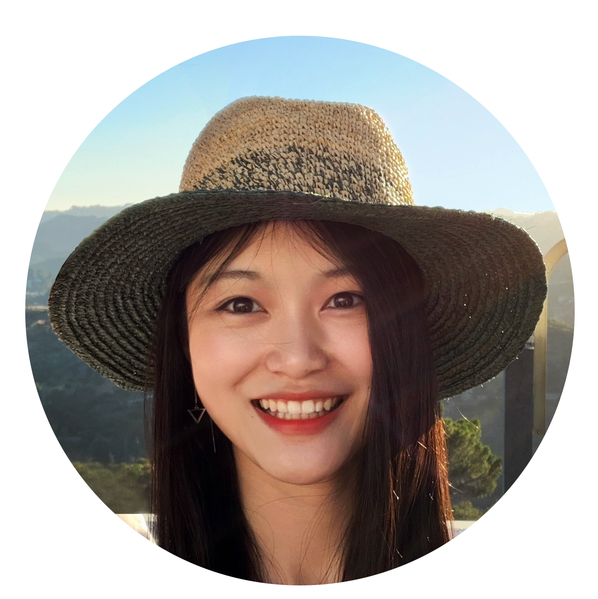

Hola! 👋
Nice to meet you! I’m a product designer, a problem solver, a collaborator. I love learning new things and enjoy conquering challenges.
The journey into the creative world started when I got into drawing as a kid and that also lead
me to architecture schools, where I learned about design thinking, problem solving and digital visual.
UX design allows me to extend my skills to a next level — I can get my idea tested, get feedback and make changes. I’m excited
to help create experiences that bring ease and joy into other’s lives. ✨
Skills
Learning new things is fun! In addition to UX design, I also try to code, illustrate, build digital 3d models.
UX/UI
Figma, Sketch, Adobe XD, InVision, Principle, Balsamiq
Programming
HTML, CSS, Javascript (Bootstrap, jquery)
2D Graphic
Adobe Suite
(Illustrator, Photoshop, InDesign, After Effects), AutoCAD, ArcGIS
3D Modelling
Rhino, Unity, Grasshopper, Sketchup, 3Dmax Studio
Video Editing and Animation
After
Effects, Premiere Pro
Exploratory Research
Affinity Mapping, Competitive Analysis, Contextual Inquiry, Survey
Evaluative Research
A/B Testing, Content Analysis,
Usability Testing
Things I love
☕ 🨠🵠📖 🮠🃠🌇
You can also find my architecture design work here